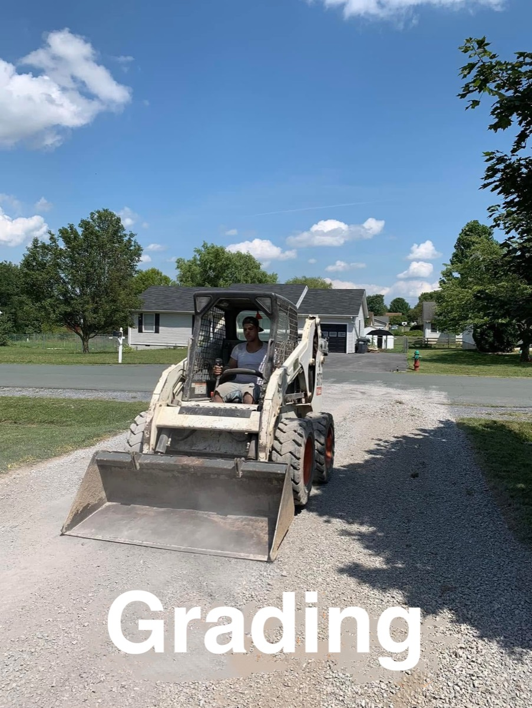

Paving in Shepherdstown, West Virginia

The site already calls Shepherdstown West Virginia's oldest town, and it already contrasts a flatter lot here with a hillside cut in Berkeley Springs. That contrast is the useful part. A+ Paving & Landscaping paves driveways and builds patios and landscaping in Shepherdstown. On a flat Jefferson County lot, water does not run away because the ground told it to. If the grade is lazy, it sits. Clay under that puddle stays wet, and freeze-thaw opens the pavement from below even when the street itself is gentle.
Pitch is the job
Grading a Shepherdstown drive is less about cutting a bank and more about finding a few inches of fall that the eye misses. The pavement should leave the garage higher than the street end, and it should not pitch toward a stone walk or a foundation. A birdbath in the middle of a flat drive will map itself in ice every January. Sealcoating over that birdbath makes a pretty low spot, not a dry one. Fix the shape, then sealcoat in a warm, dry late-summer or early-fall window, with the air above 50°F during the cure. That temperature is general application guidance, not a town rule.
Older streets in town are narrow. The apron may be short and shared in feel with the sidewalk even when the drive is private. Check with the Town of Shepherdstown or Jefferson County, and with your HOA, before that apron changes width or material. We are not citing an ordinance. Newer edges of town can have covenant rules that the older streets do not. Ask which one you are in.
Patios and walks on the same flat grade
Patios and landscaping are already part of how we describe Shepherdstown. A walk or a bed that dams the only place water could leave will undo the pitch in the driveway. Build the hardscape so the lawn edge stays lower than the pavement. Stone borders look finished and still have to have a gap for water.
The other Jefferson County page is Charles Town. Hillside work is the Berkeley Springs page, which is the comparison our cost notes already draw. Request an estimate if the drive holds water after a rain. That symptom matters more here than a photo of the surface color.